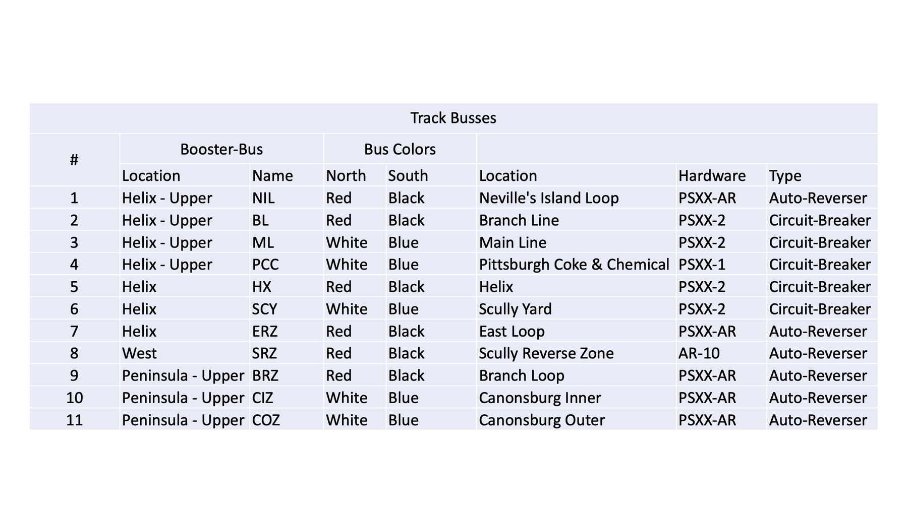
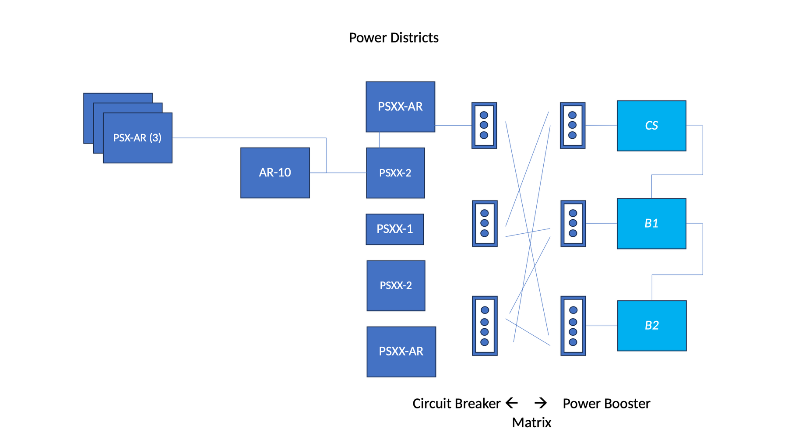
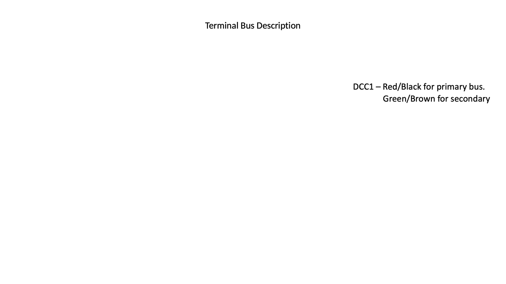
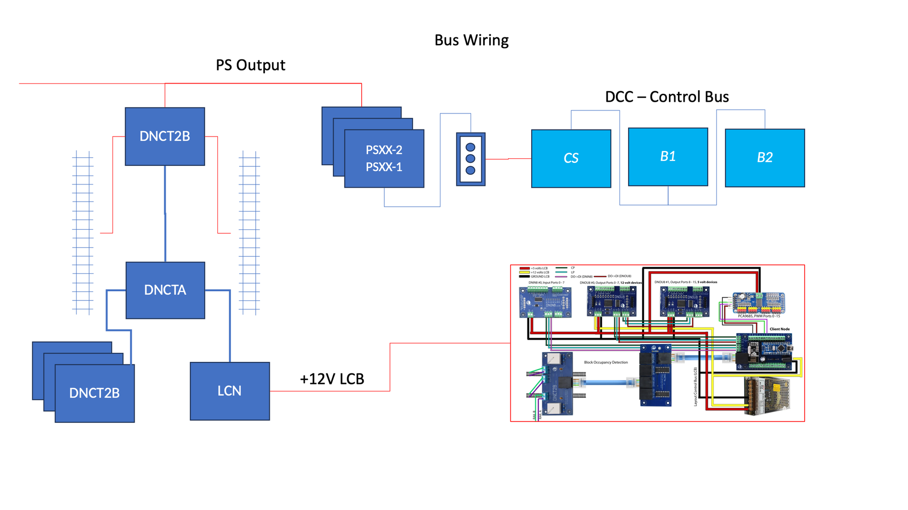
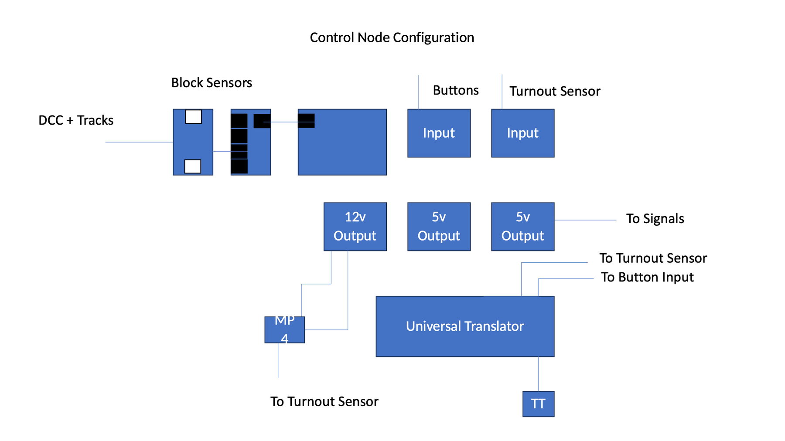
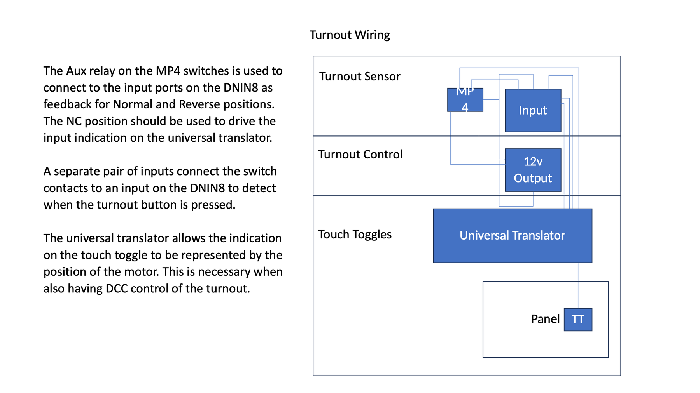
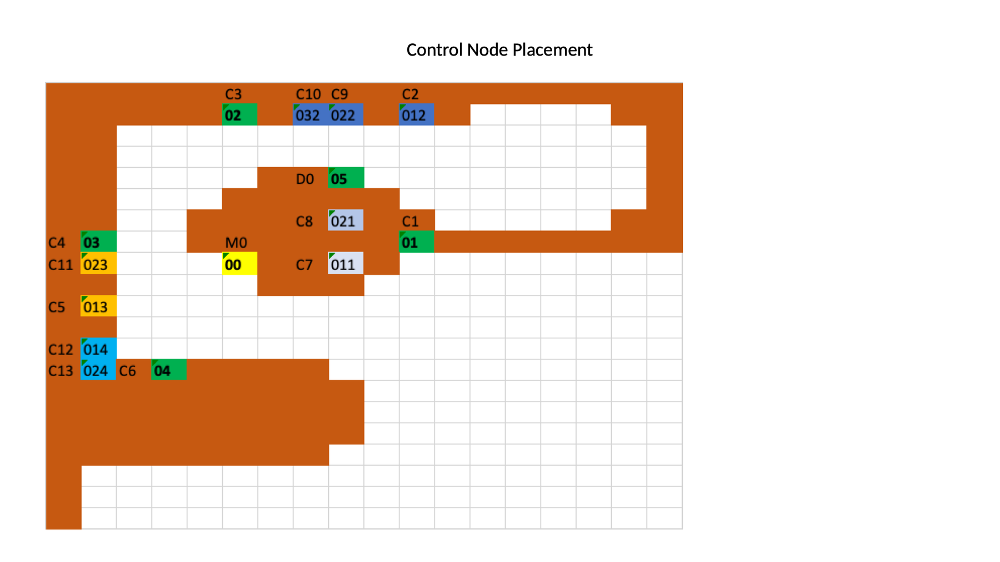
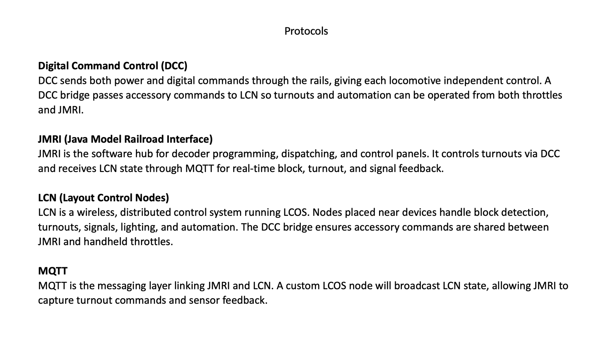

Track buses

Power districts

Terminal bus colors

Bus wiring

Control node configuration

Turnout wiring

Control node placement

Protocols

Pin-by-pin wiring for every node is in the wiring viewer.